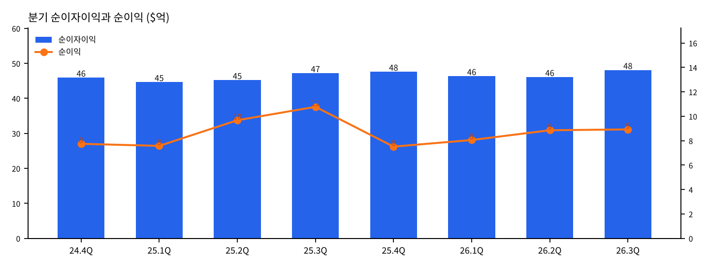
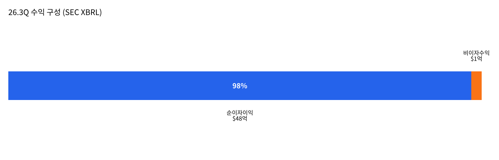
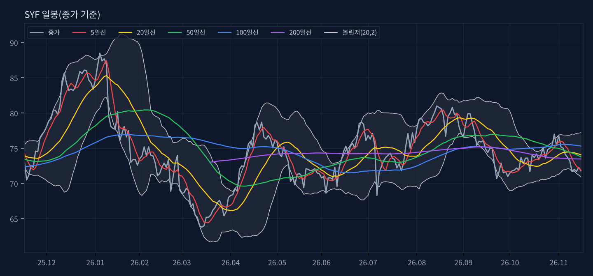
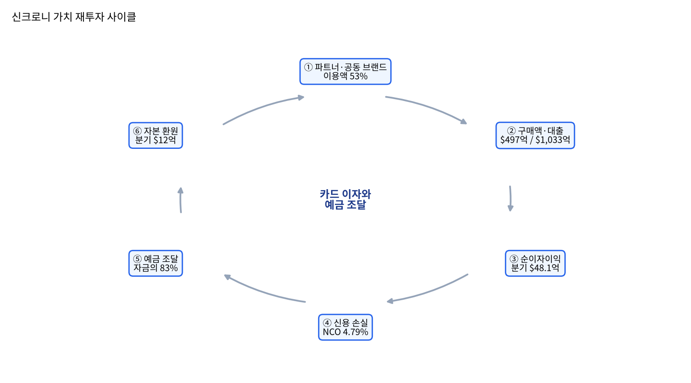

신크로니는 월마트·아마존 같은 파트너사 이름으로 나가는 매장·공동 브랜드 카드를 발급하고 대출을 운영하는 회사다. 카드 이용액의 53%가 공동 브랜드 카드에서 나오고, 은행 계열사가 받은 예금이 자금의 83%를 담당한다. 수익의 대부분은 카드 대출 이자다.
| 항목 | 내용 |
|---|---|
| 종목 | Synchrony Financial (SYF) · NYSE · 본사 코네티컷 스탬퍼드 |
| 밸류에이션 | PER 7.5배 · P/S 1.23배 (2026.11.16 종가 $71.76) |
| 최근 분기(26.3Q) | 순이자이익 $48.1억, 순이익 $8.9억, EPS $2.68 |
| 수익성 | ROE 19.8%, ROA 2.9%, 효율비율 35.9% |
| 자본 | CET1 12.9%, 3분기 주주 환원 $12억 |
| 직책 | 인물 | 역할·특징 |
|---|---|---|
| CEO | 브라이언 다우블스 | 파트너 카드 중심 성장과 디지털 확장 |
| CFO | 브라이언 웬젤 | 실적·가이던스 발표 담당 |
경영 스타일: 파트너사와 함께 가는 카드. 파트너사(소매·건강 등)와 공동 브랜드를 만들어 고객을 확보하고, 대출 손실은 수익 안에서 관리한다. 비용 효율이 높아 효율비율이 35.9%다. FY26 EPS는 약 $9.50 수준(출처 보도, 확인 필요)이다.
파트너사 결제·고객 데이터와 연결해 신용 심사를 한다. 구매액이 3분기에 8% 늘었다.
매장·병원·가전·여행 같은 분야에서 파트너와 오래 가는 카드를 늘리고, 예금으로 싸게 조달한다.
다음 실적발표는 세 가지 질문에 답하는 자리다.
1. 순상각률이 4.79%에서 더 내려가나?
2. 구매액(+8%)과 대출 잔액이 계속 늘어나나?
3. 자본 환원이 이어지나?
한 줄 판정 규칙: 첫 번째 질문(순상각률)이 가장 약한 고리다. 낮아지면 이익 고리가 가장 먼저 풀린다.
일정: 다음 실적발표는 트레이딩뷰 추정 2027.01.22(회사 확정 일정은 확인 필요).
| 분기 | 순이자이익 | 비이자수익 | 영업비용 | 대손충당금 | 세전이익 | 순이익 | EPS | 조정 EPS | 특이 사항 |
|---|---|---|---|---|---|---|---|---|---|
| 24.4Q | $46억* | $1.3억* | $13억* | $16억* | $10억* | $8억* | $1.90 | – | |
| 25.1Q | $45억 | $1.5억 | $12억 | $15억 | $10억 | $8억 | $1.89 | – | |
| 25.2Q | $45억 | $1.2억 | $12억 | $11억 | $13억 | $10억 | $2.50 | – | |
| 25.3Q | $47억 | $1.3억 | $12억 | $11억 | $14억 | $11억 | $2.86 | – | 8분기 중 순이익·EPS 최고 |
| 25.4Q | $48억* | $1.3억* | $14억* | $14억* | $10억* | $8억* | $2.04 | – | |
| 26.1Q | $46억 | $1.3억 | $13억 | $13억 | $10억 | $8억 | $2.27 | – | |
| 26.2Q | $46억 | $1.4억 | $13억 | $12억 | $12억 | $9억 | $2.59 | – | |
| 26.3Q | $48억 | $1.1억 | $14억 | $13억 | $12억 | $9억 | $2.68 | – | NCO 4.79%, 효율비율 35.9%, CET1 12.9% |
EPS는 희석 GAAP 주당순이익이다. 신크로니는 조정 EPS를 따로 발표하지 않아 조정 EPS는 –로 표시했다(트레이딩뷰 최신 분기 Reported = GAAP, 8분기 표는 불러오지 못함). *는 연간 − 1~3분기 합으로 구한 근사치다. SEC 항목을 더해도 세전이익과 맞지 않는데, 항목 정의 차이(리테일러 수익 분배 등 추정)로 보이며 추가 확인이 필요하다.

흐름 요약: 순이자이익은 24.4Q $45.9억에서 26.3Q $48.1억으로 늘었다. 순이익은 25.3Q $10.8억(EPS $2.86)을 정점으로 25.4Q $7.5억으로 내려갔다가 26.3Q $8.9억까지 회복했다. 25.4Q 충당금이 $14.4억으로 컸던 영향이다.
| 구분 | 돈을 버는 방식 | 26.3Q | 비중 |
|---|---|---|---|
| 순이자이익 | 카드·대출 이자 − 예금 조달 비용 | $48.1억 | 98% |
| 비이자수익 | 수수료 등 | $1.1억 | 2% |

수익이 거의 이자에서 나온다. 금리와 연체 변화가 이익에 직접 영향을 준다. 카드 이용액의 53%가 공동 브랜드에서 나오는 점도 파트너 의존도를 보여 준다.
신크로니의 목적은 "파트너사의 고객을 카드로 묶어 이자와 구매액을 키우는 것"이다.
| 축 | 내용 |
|---|---|
| 공동 브랜드 카드 | 이용액의 53% |
| 예금 조달 | 자금의 83%를 예금으로 조달 |
| 비용 효율 | 효율비율 35.9% |
| 신용 관리 | 순상각률 4.79% 관리 |
| 주주 환원 | 3분기 $12억 |

| 이동평균 | 값 | 종가 대비 | 위치 |
|---|---|---|---|
| 5일선 | $71.90 | -0.2% | 종가 아래 |
| 20일선 | $74.06 | -3.1% | 종가 아래 |
| 50일선 | $73.77 | -2.7% | 종가 아래 |
| 100일선 | $75.31 | -4.7% | 종가 아래 |
| 200일선 | $73.47 | -2.3% | 종가 아래 |
52주 고가 $88.8에서 내려와 최근 55일은 $69.4~80.8 범위다. 종가 $71.76은 55일 저가($69.4) 위 3.4%다.
| 규칙 | 기준 | 현재 값 | 신호 |
|---|---|---|---|
| 장기 추세 필터 | 종가 vs 200일선 | $71.80 < $73.47 | 매도 |
| 중장기 교차 | 50일선 vs 200일선 | $73.77 > $73.47 | 매수 |
| 단기 교차 | 20일선 vs 50일선 | $74.06 > $73.77 | 매수 |
| 돈키언 채널 | 55일 고가 $80.80 / 저가 $69.40 | 중간값 $75.10 아래 | 매도 |
| 1개월 모멘텀 | 21거래일 수익률 | -2.6% (기준 $73.70) | 매도 |
| 3개월 모멘텀 | 63거래일 수익률 | -10.9% (기준 $80.60) | 매도 |
| 6개월 모멘텀 | 126거래일 수익률 | +1.0% (기준 $71.10) | 매수 |
| 12개월 모멘텀 | 252거래일 수익률 | -2.8% (기준 $73.80) | 매도 |
| 종합 (8개 평균) | -0.25 | 매도 우위 |
해석: 매수 신호 3개(중장기 교차, 단기 교차, 6개월 모멘텀), 매도 신호 5개(장기 추세 필터, 돈키언 채널, 1개월 모멘텀, 3개월 모멘텀, 12개월 모멘텀). 합계 -0.25다. 14일 ATR $2.44 (3.4%), 52주 고가 $88.80 · 저가 $63.10.
| 가격 | 기준 | 무엇이 바뀌나 |
|---|---|---|
| $80.80 | 55일 고가 | 돌파 시 채널 상단 갱신 |
| $80.60 | 3개월 모멘텀 기준가 | 종가가 이 가격 위면 3개월 신호 매수 |
| $75.10 | 돈키언 중간값 | 55일 채널 중간값 위/아래로 신호가 바뀜 |
| $73.80 | 12개월 모멘텀 기준가 | 종가가 이 가격 위면 12개월 신호 매수 |
| $73.70 | 1개월 모멘텀 기준가 | 종가가 이 가격 위면 1개월 신호 매수 |
| $73.47 | 200일선 | 종가가 이 선 위/아래인지로 장기 추세 신호가 바뀜 |
| $71.10 | 6개월 모멘텀 기준가 | 종가가 이 가격 위면 6개월 신호 매수 |
| $69.40 | 55일 저가 | 이탈 시 채널 하단 갱신 |
가격 수준은 신호가 바뀌는 기준선일 뿐 진입·청산 가격 제안이 아니다. 20일/50일 교차는 이동평균 자체가 움직여 단일 가격으로 표시하지 않았다. 일봉·주봉은 종가 기준 직접 계산(고저 데이터 미사용)이다.
| 악재 요인 | 내용 | 강도 |
|---|---|---|
| 신용 손실 | 순상각률 4.79%. 오르면 충당금이 늘어 이익 감소 | 높음 |
| 성장 둔화 | EPS 성장 +4.6%(트레이딩뷰), PEG 1.63 | 중간 |
| 파트너 의존 | 공동 브랜드가 이용액의 53%. 파트너 변경 시 영향 | 중간 |
| 금리·예금 비용 | 순이자이익이 수익의 98%라 금리 변화에 민감 | 참고 |
| 티커 | 회사 | PER(TTM) | PEG | P/S | EPS 성장(YoY) |
|---|---|---|---|---|---|
| SYF | 신크로니 | 7.5배 | 1.63 | 1.23배 | +5% |
| AXP | 아메리칸 익스프레스 | 18.0배 | 0.94 | 2.50배 | +19% |
| COF | 캐피털원 | 11.4배 | 0.02 | 1.89배 | +618% |
| ALLY | 앨라이 | 8.7배 | 0.05 | 1.20배 | +163% |
| BFH | 브레드 파이낸셜 | 7.7배 | 0.27 | 0.97배 | +29% |
비교 결론: SYF의 PER 7.5배는 카드·소비자 금융 피어 중 가장 낮은 편(BFH 7.7배, ALLY 8.7배)이다. 다만 EPS 성장률 +4.6%가 낮아 PEG는 1.63으로 피어(0.05~0.94)보다 높다. COF·ALLY의 낮은 PEG는 기저 효과로 왜곡돼 있다.
SYF는 적자 기업이 아니다(최근 4분기 순이익 $33억). 자본비율과 예금 비중으로 자본력을 본다.
| 지표 | 값 | 의미 |
|---|---|---|
| CET1 | 12.9% | 손실 흡수력 |
| 예금 비중 | 자금의 83% | 안정적 조달 |
| ROE · ROA | 19.8% · 2.9% | 수익성 높음 |
| 효율비율 | 35.9% | 비용 효율 높음 |
| 대출 잔액 | $1,033억 | 구매액 $497억(+8%) |
| 기준 | 매출 | P/S | 비고 |
|---|---|---|---|
| 트레이딩뷰 | – | 1.23배 | 매출 기준 |
| 카드·소비자금융 피어(AXP·COF·ALLY·BFH) | – | 약 1.64배 | 2.50 / 1.89 / 1.20 / 0.97 |
해석: SYF의 P/S 1.23배는 AXP(2.50배)·COF(1.89배)보다 낮고 ALLY(1.20배)와 비슷하다. ROE 19.8%에 비해 가격이 낮아 시장이 성장과 신용 위험을 함께 반영한 것으로 보인다.
은행형 구조라 EBITDA 대신 충당금 전 영업이익(PPNR)을 쓴다. 세전이익과 충당금의 합이다.
| 지표 | 값 | 산출 |
|---|---|---|
| 세전이익 (TTM) | $43.7억 | SEC 합계 |
| 대손충당금 (TTM) | $52.4억 | SEC 합계 |
| PPNR (TTM) | 약 $96억 — 흑자 | 세전이익 + 충당금 |
| 순이익 (TTM) | $33.3억 | SEC 합계 |
| 영업현금흐름 (TTM) | 약 $96억 | $25.0 + $24.2 + $21.8 + $24.5 (SEC) |
| 방식 | PER | EPS 성장률 | PEG | 판정 |
|---|---|---|---|---|
| 트레이딩뷰 (GAAP TTM $9.57) | 7.5배 | +4.6% | 1.63 | 기준 초과 |
| 직접 계산 (GAAP, 직전 $9.15) | 7.5배 | +4.7% | 약 1.59 | 기준 초과 |
판정: PEG 1.63 → 기준 초과. GAAP 외 조정 EPS는 발표되지 않아 조정 PEG는 없다. TTM EPS $9.58은 직전 4분기 $9.15보다 4.7% 늘었다. FY26 EPS 약 $9.50은 TTM보다 낮아 성장이 더 둔화될 수 있다(출처 확인 필요).

신크로니 사이클은 파트너 카드 → 구매액 → 이자 → 예금 조달 → 자본 환원으로 돈다.
| 고리 | 현재 숫자 | 고리 강도 | 약해지는 신호 |
|---|---|---|---|
| ① 파트너·공동 브랜드 | 이용액의 53% | 강함 | 파트너 이탈 |
| ② 구매액·대출 | 구매액 $497억(+8%), 대출 $1,033억 | 강함 | 증가율 둔화 |
| ③ 순이자이익 | 분기 $48.1억 | 강함 | 금리 하락 |
| ④ 신용 손실 | 순상각률 4.79%, 충당금 $12.7억 | 주의 | 연체·손실 증가 |
| ⑤ 예금 조달 | 자금의 83% | 강함 | 예금 이탈 |
| ⑥ 자본 환원 | CET1 12.9%, 분기 $12억 | 강함 | 환원 축소 |
사이클의 특징: 약한 고리는 ④다. 높은 이자를 받는 대신 손실도 큰 구조라 연체가 오르면 이익이 바로 줄어든다.